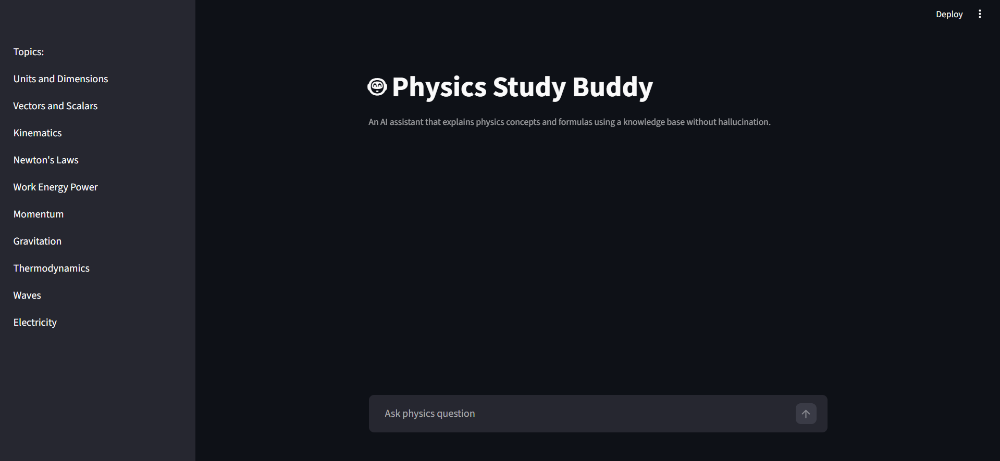
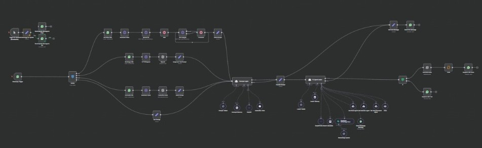
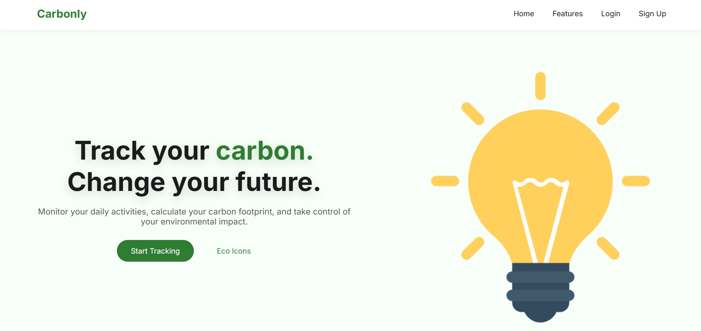

Agentic AI & Orchestration
AI Agents · Agentic Workflows · Tool Calling · Memory Systems · LangGraph · LangChain · Prompt Engineering
Agentic AI · RAG Systems · Full-Stack AI Development
I’m Dhruv Gupta, a final-year B.Tech Computer Science student focused on practical AI applications, agentic workflows, and user-facing web systems that connect LLMs with real product functionality.
About
I am a final-year Computer Science student at KIIT, building AI-powered web applications that combine RAG pipelines, agentic workflows, backend APIs, vector databases, and usable interfaces.
My work focuses on implementation, testing, and improvement. I like working through the parts where AI applications often fail: weak retrieval, missing context, unclear routing, inconsistent responses, and backend integration issues.
The goal behind my projects is simple: build AI systems that are not only impressive in demos, but also easier to evaluate, debug, and improve.
Skills
A structured view of the skills I use to design, build, connect, test, and improve agentic AI systems.
Agent workflows, RAG pipelines, tool calling, memory systems, evaluation, backend integration, and deployment-ready AI prototypes.
AI Agents · Agentic Workflows · Tool Calling · Memory Systems · LangGraph · LangChain · Prompt Engineering
LLMs · Retrieval-Augmented Generation · Embeddings · Vector Search · Context Handling · RAGAS · Response Evaluation
FastAPI · Node.js · Express.js · REST APIs · Authentication · JWT · bcrypt · API-driven AI workflows
MongoDB · ChromaDB · Supabase Vector DB · SQL · Document Stores · Semantic Retrieval
OpenAI API · Groq API · Twilio · n8n · ElevenLabs · Git · Linux · Bash Scripting · Streamlit
Python · JavaScript · HTML · CSS · C · Java · Prototype Interfaces · Debugging · Product Thinking
Projects
Practical builds covering RAG workflows, multimodal AI assistants, backend APIs, and ML-powered product development.

A reliability-focused physics question-answering system using semantic retrieval, LangGraph workflow routing, callable retrieval tools, fallback handling, and RAGAS-based evaluation.

A multimodal assistant prototype designed for text, audio, image, and document-based inputs, with document retrieval and WhatsApp access during prototype testing.

A full-stack sustainability analytics platform for estimating and tracking user carbon emissions from lifestyle inputs, supported by APIs, authentication, dashboards, and ML inference integration.
Achievements
Strong analytical and data-focused academic signal.
Kalinga Institute of Industrial Technology, Bhubaneswar.
Strong academic foundation from Delhi Public School Ghaziabad.
Contact
If you’d like to discuss a role, collaboration, or project, you can reach me directly through email, phone, GitHub, or LinkedIn.
Send a message
Replace the form action URL with your own Formspree or FormSubmit endpoint before using this form live.